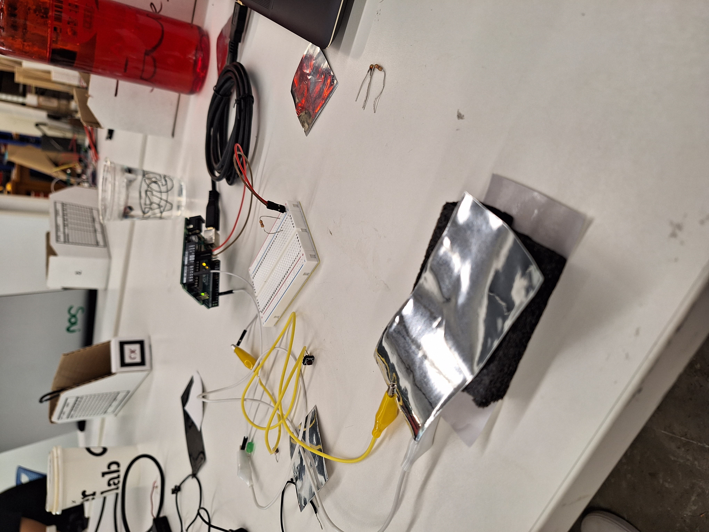

<br>
####Electronics
<h1>Introduction to Electronics</h1>
Assembly that moves a motor.
Reading 5V...
<img src="reading2.jpg" width="500px">
But only 2.5V is really powering the LED light.
Reading the resistor.
<img src="sampleCode.png" width="500px">
<br>Code I wrote as practice during lab with Ibrahim. I left plenty of pseudocode to let me know what each line is doing - I'm completely new to coding so I need grey text everywhere to tell me how everything works!</br>
Code to run the motor for my kinetic sculpture.
<br>Fusion 360 render of cardboard board I used in kinetic sculpture. Created using the wooden boards with holes as reference (in terms of dimensions - used calipers to measure). Used parameters, tolerancing, rectangular patterns...</br>
<br>I made this before I found out that there is a gear tool for Fusion360 that makes your life much easier. Used wooden gears as reference - measured using calipers and inputted measurements into Fusion and added some slack in the tolerance so the gears would fit together nicely.</br>
<br>Assembly of electronic parts I made to power my kinetic sculpture. The Arduino code reads the holes in the Arduino board where the wires connecting to the motor are connected to. The black USB-shaped object that plugs into the Arduino board "injects" the code into the board - very cool stuff; all new to me. I don't know how to describe this but it's all very cool and exciting!</br>
<video width="500px" muted autoplay>
<source src="./gearSpin.mp4" type="video/mp4">
</video>
<br>My kinetic sculpture. I wish I had more time to work on this to make this more impressive - unfortunately, I have to spend a lot of time on Calc II and college essays, so I had to budget my time conservatively for creating my sculpture. Special thanks to our test this week (after 4th of July of all days), which took up most of my time.</br>
/////////////////////////////////////////////////////////////////////////////////////////////////////////////////////////////////////////////////////////////////////////////////////////////////////////////////////////////////////////////////////////////

<br>
Pressure sensor. Senses pressure when you apply pressure on it.
</br>